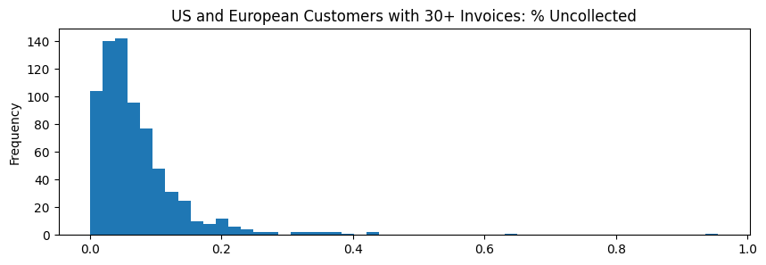

title: Exploratory Data Analysis authors: - Lauren Talbot created_at: 2023-04-13 00:00:00 tldr: A machine learning project is only as good as the data that goes into it. What are some of the high level aspects of the data that we can discover? How should we clean and filter the data? tags: [] updated_at: 2023-04-20 23:19:20.098386 thumbnail: images/output_24_1.png
python
%matplotlib inline
figsize = (10,3)
python
import pandas, numpy
pandas.options.display.float_format = '{:,.4f}'.format
data_folder = '../data'
date_format='%Y-%m-%d' #truncate datetimes to dates
id_columns = ["id","company_id","invoice_id","account_id","customer_id"]
id_column_types = dict(zip(id_columns,[str] * len(id_columns)))
invoices = pandas.read_csv(data_folder + '/invoice.csv', na_values='inf', dtype=id_column_types,
parse_dates=['invoice_date', 'due_date', 'cleared_date'], date_format=date_format)
payments = pandas.read_csv(data_folder + '/invoice_payments.csv', na_values='inf', dtype=id_column_types,
parse_dates=['transaction_date'], date_format=date_format)
We have two input datasets: invoices and their payments. - Payments are amounts in time, which are directly mapped to companies. - Invoices can have multiple payments, but usually only have 1.
python
invoices.dtypes
id object
due_date datetime64[ns]
invoice_date datetime64[ns]
status object
amount_inv float64
currency object
company_id object
customer_id object
account_id object
cleared_date datetime64[ns]
root_exchange_rate_value float64
dtype: object
python
payments.dtypes
amount float64
root_exchange_rate_value float64
transaction_date datetime64[ns]
invoice_id object
company_id object
converted_amount float64
dtype: object
```python
invoices.id.value_counts(dropna=False).value_counts(dropna=False)\ .to_frame(name="ids").rename_axis('invoices_per_id') ```
| ids | |
|---|---|
| invoices_per_id | |
| 1 | 113085 |
```python
len(set(payments.invoice_id) - set(invoices.id)) ```
0
```python
len(set(invoices.id) - set(payments.invoice_id))/invoices.len() ```
0.07127382057744175
```python
payments.invoice_id.value_counts(dropna=False).value_counts(dropna=False, normalize=True)\ .to_frame(name="invoices").rename_axis('payments_per_invoice') ```
| invoices | |
|---|---|
| payments_per_invoice | |
| 1 | 0.9419 |
| 2 | 0.0548 |
| 3 | 0.0026 |
| 4 | 0.0006 |
| 5 | 0.0001 |
| 6 | 0.0001 |
| 14 | 0.0000 |
| 9 | 0.0000 |
| 8 | 0.0000 |
| 7 | 0.0000 |
python
invoices.groupby("company_id")[["customer_id","currency"]].nunique()
| customer_id | currency | |
|---|---|---|
| company_id | ||
| 114 | 4509 | 15 |
| 14 | 546 | 13 |
python
invoices.groupby("customer_id").company_id.nunique().value_counts()\
.to_frame(name='customers').rename_axis('companies_per_customer')
| customers | |
|---|---|
| companies_per_customer | |
| 1 | 5055 |
python
invoices.groupby(["customer_id"]).currency.nunique().value_counts()\
.to_frame(name='customers').rename_axis('currencies_per_customer')
| customers | |
|---|---|
| currencies_per_customer | |
| 1 | 4426 |
| 2 | 583 |
| 3 | 39 |
| 4 | 7 |
python
invoices.groupby("company_id").account_id.nunique().to_frame(name="unique_accounts")
| unique_accounts | |
|---|---|
| company_id | |
| 114 | 1 |
| 14 | 1 |
python
invoices.groupby("account_id").company_id.nunique().value_counts()\
.to_frame(name='count').rename_axis('companies_per_account')
| count | |
|---|---|
| companies_per_account | |
| 1 | 2 |
Transaction data begins in 2011 and ends 2021-05-18. We will assume this is when the data was pulled.
python
payments.__len__()
111623
python
payment_stats = payments.describe(include='all')
payment_stats.loc['% populated'] = payment_stats.loc['count']/payments.__len__()
payment_stats
| amount | root_exchange_rate_value | transaction_date | invoice_id | company_id | converted_amount | |
|---|---|---|---|---|---|---|
| count | 111,622.0000 | 111,623.0000 | 111623 | 111623 | 111623 | 111,622.0000 |
| unique | NaN | NaN | NaN | 105025 | 2 | NaN |
| top | NaN | NaN | NaN | 48171 | 114 | NaN |
| freq | NaN | NaN | NaN | 14 | 108124 | NaN |
| mean | 9,416.9806 | 0.9684 | 2018-03-04 09:52:41.445221376 | NaN | NaN | 9,128.7160 |
| min | 0.0000 | 0.0008 | 2011-04-13 00:00:00 | NaN | NaN | 0.0000 |
| 25% | 4,078.6262 | 1.0000 | 2016-08-05 00:00:00 | NaN | NaN | 3,180.9720 |
| 50% | 9,332.6655 | 1.0000 | 2018-08-18 00:00:00 | NaN | NaN | 8,819.6202 |
| 75% | 14,651.4959 | 1.0000 | 2020-02-15 00:00:00 | NaN | NaN | 14,612.8617 |
| max | 19,999.8792 | 3.2533 | 2021-05-18 00:00:00 | NaN | NaN | 61,209.4348 |
| std | 6,015.3362 | 0.2446 | NaN | NaN | NaN | 6,438.8126 |
| % populated | 1.0000 | 1.0000 | 1.0000 | 1.0000 | 1.0000 | 1.0000 |
python
last_transaction_date = payments.transaction_date.max()
first_transaction_date = payments.transaction_date.min()
first_transaction_date, last_transaction_date
(Timestamp('2011-04-13 00:00:00'), Timestamp('2021-05-18 00:00:00'))
```python
(((payments.amount * payments.root_exchange_rate_value) - payments.converted_amount).abs()).max() ```
1.0913936421275139e-11
python
payments[payments.amount.isnull()!=payments.converted_amount.isnull()].__len__()
0
python
payments.select_dtypes(include='float').hist(bins=50, figsize=figsize, layout=(1,3))
array([[<Axes: title={'center': 'amount'}>,
<Axes: title={'center': 'root_exchange_rate_value'}>,
<Axes: title={'center': 'converted_amount'}>]], dtype=object)
Must become active within the date range of the transactions data to ensure completeness.
```python
(invoices.loc[invoices.invoice_date>last_transaction_date].len(),
invoices.loc[invoices.invoice_date
(79, 79, 14)
python
invoices = invoices.loc[(invoices.invoice_date>=first_transaction_date) &
(invoices.invoice_date<=last_transaction_date) &
(invoices.invoice_date.dt.to_period('M')<=invoices.due_date.dt.to_period('M'))]
```python
invoices['converted_amount_inv'] = invoices.amount_inv * invoices.root_exchange_rate_value ```
python
invoices_stats = invoices.describe(include='all')
invoices_stats.loc['% populated'] = invoices_stats.loc['count']/invoices.__len__()
invoices_stats
| id | due_date | invoice_date | status | amount_inv | currency | company_id | customer_id | account_id | cleared_date | root_exchange_rate_value | converted_amount_inv | |
|---|---|---|---|---|---|---|---|---|---|---|---|---|
| count | 112888 | 112888 | 112888 | 112888 | 112,888.0000 | 112888 | 112888 | 112888 | 112888 | 112888 | 112,888.0000 | 112,888.0000 |
| unique | 112888 | NaN | NaN | 2 | NaN | 18 | 2 | 5054 | 2 | NaN | NaN | NaN |
| top | 0 | NaN | NaN | CLEARED | NaN | USD | 114 | 5 | 0 | NaN | NaN | NaN |
| freq | 1 | NaN | NaN | 109264 | NaN | 84998 | 109695 | 1786 | 109695 | NaN | NaN | NaN |
| mean | NaN | 2018-03-30 15:44:57.895259136 | 2018-02-22 18:34:17.288640 | NaN | 10,026.6987 | NaN | NaN | NaN | NaN | 2018-04-27 06:29:11.144497408 | 0.9708 | 9,742.3893 |
| min | NaN | 2011-04-13 00:00:00 | 2011-04-13 00:00:00 | NaN | 0.0276 | NaN | NaN | NaN | NaN | 2011-05-15 00:00:00 | 0.0008 | 0.0080 |
| 25% | NaN | 2016-08-27 00:00:00 | 2016-07-22 00:00:00 | NaN | 5,030.1056 | NaN | NaN | NaN | NaN | 2016-09-16 00:00:00 | 1.0000 | 4,161.6325 |
| 50% | NaN | 2018-09-22 00:00:00 | 2018-08-19 00:00:00 | NaN | 10,018.0136 | NaN | NaN | NaN | NaN | 2018-10-13 00:00:00 | 1.0000 | 9,588.6353 |
| 75% | NaN | 2020-03-21 00:00:00 | 2020-02-16 00:00:00 | NaN | 15,030.4018 | NaN | NaN | NaN | NaN | 2020-04-21 00:00:00 | 1.0000 | 15,058.0828 |
| max | NaN | 2021-08-29 00:00:00 | 2021-05-18 00:00:00 | NaN | 19,999.9749 | NaN | NaN | NaN | NaN | 2022-01-01 00:00:00 | 1.6816 | 32,285.4757 |
| std | NaN | NaN | NaN | NaN | 5,768.0500 | NaN | NaN | NaN | NaN | NaN | 0.2461 | 6,286.1231 |
| % populated | 1.0000 | 1.0000 | 1.0000 | 1.0000 | 1.0000 | 1.0000 | 1.0000 | 1.0000 | 1.0000 | 1.0000 | 1.0000 | 1.0000 |
```python invoices['months_allowed'] = invoices.due_date.dt.to_period('M') - invoices.invoice_date.dt.to_period('M') invoices.months_allowed = invoices.months_allowed.map(lambda m: m.n if not pandas.isnull(m) else None)
invoices.months_allowed.value_counts(normalize=True, dropna=False) ```
months_allowed
1 0.7645
2 0.1808
0 0.0320
3 0.0199
5 0.0009
4 0.0008
6 0.0003
7 0.0002
11 0.0001
8 0.0001
9 0.0001
12 0.0001
10 0.0001
13 0.0000
18 0.0000
14 0.0000
16 0.0000
19 0.0000
15 0.0000
Name: proportion, dtype: float64
```python invoices['months_billing'] = invoices.cleared_date.dt.to_period('M') - invoices.invoice_date.dt.to_period('M') invoices.months_billing = invoices.months_billing.map(lambda m: m.n if not pandas.isnull(m) else None)
invoices.months_billing.value_counts(normalize=True, dropna=False) ```
months_billing
1 0.4507
2 0.2654
3 0.0810
0 0.0718
4 0.0324
9 0.0213
5 0.0186
6 0.0116
10 0.0086
7 0.0083
8 0.0081
12 0.0067
11 0.0045
-1 0.0016
13 0.0015
14 0.0012
15 0.0009
16 0.0006
-2 0.0006
17 0.0005
-4 0.0004
18 0.0004
-3 0.0004
19 0.0003
20 0.0002
21 0.0002
-5 0.0002
24 0.0001
22 0.0001
25 0.0001
23 0.0001
26 0.0001
28 0.0001
-7 0.0001
-11 0.0001
-10 0.0001
-9 0.0001
31 0.0001
27 0.0001
-6 0.0001
-8 0.0001
30 0.0001
29 0.0001
32 0.0001
-13 0.0000
-15 0.0000
-16 0.0000
-14 0.0000
-12 0.0000
-22 0.0000
-17 0.0000
34 0.0000
-18 0.0000
40 0.0000
38 0.0000
-21 0.0000
-32 0.0000
-19 0.0000
36 0.0000
35 0.0000
Name: proportion, dtype: float64
Exchange rates vary for both payments and open invoices. Customers would expect to pay the amount they were originally invoiced in their own currency, not the USD amount originally invoiced. Therefore, we should use raw amounts to determine how much is paid vs due.
```python
currency_ranges = invoices.groupby("currency").root_exchange_rate_value.describe(percentiles=[]) (currency_ranges['max']/currency_ranges['min']).sort_values().plot(kind='bar', title="Exchange Rate Spread Ratio") ```
<Axes: title={'center': 'Exchange Rate Spread Ratio'}, xlabel='currency'>

```python
invoices_usd = invoices.query("currency=='USD'").copy() invoices_usd['exchange_rate_is_1'] = invoices_usd['root_exchange_rate_value'] == 1 1 - invoices_usd.exchange_rate_is_1.mean() ```
0.01562389703287137
```python
time_to_clear = invoices_usd.cleared_date - invoices_usd.invoice_date invoices_usd['months_to_clear'] = time_to_clear.map(lambda t: round(t.days/30)) ```
python
invoices_usd.groupby("exchange_rate_is_1").months_to_clear.agg(['mean','count'])
| mean | count | |
|---|---|---|
| exchange_rate_is_1 | ||
| False | 2.9209 | 1328 |
| True | 1.8937 | 83670 |
python
invoices_usd.groupby(invoices_usd.months_to_clear.clip(upper=13, lower=-1))\
.exchange_rate_is_1.mean().plot(title='% of USD Invoices With Exchange Rate Equal to 1', figsize=figsize)
<Axes: title={'center': '% of USD Invoices With Exchange Rate Equal to 1'}, xlabel='months_to_clear'>
All invoices have a date cleared. When an invoice is open, the date cleared is set to the future, and seems to be an assumed value.
python
invoices.loc[invoices.cleared_date.isnull()].__len__()
0
python
invoices.status.value_counts(normalize=True, dropna=False).to_frame(name="% of Invoices")
| % of Invoices | |
|---|---|
| status | |
| CLEARED | 0.9679 |
| OPEN | 0.0321 |
python
invoices.loc[invoices.cleared_date.isnull() != (invoices.status == 'OPEN'),['status','cleared_date']]\
.value_counts(dropna=False)
status cleared_date
OPEN 2022-01-01 3624
Name: count, dtype: int64
```python
invoices.loc[invoices.status == 'OPEN'].cleared_date.value_counts(dropna=False) ```
cleared_date
2022-01-01 3624
Name: count, dtype: int64
```python
invoices.loc[invoices.status == 'CLEARED', ['invoice_date','cleared_date']].agg(['min','max']) ```
| invoice_date | cleared_date | |
|---|---|---|
| min | 2011-04-13 | 2011-05-15 |
| max | 2021-05-12 | 2021-05-18 |
```python
invoices.loc[invoices.status == 'OPEN', ['invoice_date','due_date']].agg(['min','max']) ```
| invoice_date | due_date | |
|---|---|---|
| min | 2019-06-27 | 2019-08-31 |
| max | 2021-05-18 | 2021-08-29 |
python
payments['transaction_month'] = payments.transaction_date.dt.to_period('M')
invoice_payments = invoices.rename(columns={"id":"invoice_id","amount_inv":"amount",
"converted_amount_inv":"converted_amount"})\
.merge(payments, on="invoice_id", how='left', suffixes=('_inv', '_pmt'))
python
invoice_payments.invoice_id.nunique()
112888
python
duplicated_columns = [col.replace('_pmt','') for col in invoice_payments.columns if col.endswith('_pmt')]
for col in duplicated_columns:
inconsistent_rows = invoice_payments.loc[invoice_payments[col + '_pmt']!=invoice_payments[col + '_inv']]
print(f"{col}: {inconsistent_rows.__len__()/invoice_payments.__len__()} inconsistent rows in merged dataset")
amount: 0.18237593431151808 inconsistent rows in merged dataset
root_exchange_rate_value: 0.3063537368275677 inconsistent rows in merged dataset
company_id: 0.06675985369079206 inconsistent rows in merged dataset
converted_amount: 0.38631322558234915 inconsistent rows in merged dataset
python
invoice_payments.query("company_id_pmt!=company_id_inv").company_id_pmt.value_counts(dropna=False)
company_id_pmt
NaN 7976
Name: count, dtype: int64
python
invoice_payments.query("amount_pmt!=amount_inv")[['amount_pmt','amount_inv']].describe()
| amount_pmt | amount_inv | |
|---|---|---|
| count | 13,812.0000 | 21,789.0000 |
| mean | 5,019.0176 | 9,964.7219 |
| std | 5,890.4138 | 5,769.7408 |
| min | 0.0000 | 2.2108 |
| 25% | 94.5922 | 4,943.9350 |
| 50% | 2,087.8125 | 9,941.0096 |
| 75% | 9,185.5456 | 14,932.1411 |
| max | 19,989.9866 | 19,999.9749 |
```python
invoice_payments.loc[invoice_payments.amount_pmt>invoice_payments.amount_inv].len() ```
0
```python
invoice_payments.loc[invoice_payments.converted_amount_pmt>invoice_payments.converted_amount_inv].len() ```
11061
python
invoice_payments['amount_pmt_pct'] = (invoice_payments.amount_pmt/invoice_payments.amount_inv)
```python
(invoice_payments.amount_pmt_pct.dropna()<1).mean() ```
0.12387888354739184
python
invoice_payments.amount_pmt_pct\
.plot(kind="hist",bins=50, title="% of Invoice Collected with Payment", figsize=figsize)
<Axes: title={'center': '% of Invoice Collected with Payment'}, ylabel='Frequency'>
python
invoice_payments.sort_values(by=['invoice_id','transaction_date'], inplace=True)
python
invoice_payments.groupby("invoice_id").amount_pmt_pct.cumsum()\
.plot(kind="hist",bins=50, title="Summed % of Invoice Collected with Payment", figsize=figsize)
<Axes: title={'center': 'Summed % of Invoice Collected with Payment'}, ylabel='Frequency'>
```python
invoice_payments['pmt_pct_cum'] = invoice_payments.groupby("invoice_id").amount_pmt_pct.cumsum() (invoice_payments.pmt_pct_cum>1).mean() ```
0.006654223129912198
```python
invoice_payments.transaction_month = invoice_payments.transaction_month\ .fillna(last_transaction_date.to_period('M')) ```
```python
invoice_payments.groupby(["invoice_id","transaction_month"]).transaction_date\ .count().value_counts(normalize=True).head() ```
transaction_date
1 0.8840
0 0.0699
2 0.0446
3 0.0013
4 0.0002
Name: proportion, dtype: float64
```python
invoice_payments.groupby(["invoice_id","transaction_month"]).amount_pmt\ .nunique().value_counts(normalize=True).head() ```
amount_pmt
1 0.8843
0 0.0700
2 0.0444
3 0.0012
4 0.0001
Name: proportion, dtype: float64
```python
invoice_payments.groupby(["invoice_id","transaction_month"]).transaction_date.nunique()\ .value_counts(normalize=True).head() ```
transaction_date
1 0.9269
0 0.0699
2 0.0030
3 0.0001
Name: proportion, dtype: float64
python
payment_totals = invoices.set_index('id')
payment_totals['pmt_pct_cum'] = invoice_payments.groupby("invoice_id").pmt_pct_cum.max().fillna(0)
payment_totals['transaction_date_max'] = invoice_payments.groupby("invoice_id").transaction_date.max()
payment_totals['collected_date'] = invoice_payments.query("pmt_pct_cum>=1")\
.groupby("invoice_id").transaction_date.min()
```python
payment_totals['collected'] = payment_totals.collected_date.isnull()==False payment_totals.collected.mean() ```
0.9052157891007016
```python
payment_totals['cleared'] = payment_totals.status=='CLEARED' payment_totals.cleared.mean() ```
0.9678973850187796
```python
(payment_totals.collected!=payment_totals.cleared).mean() ```
0.06271702926794699
```python
payment_totals.groupby("status", as_index=False)[['collected','pmt_pct_cum']].mean() ```
| status | collected | pmt_pct_cum | |
|---|---|---|---|
| 0 | CLEARED | 0.9352 | 0.9573 |
| 1 | OPEN | 0.0006 | 0.0063 |
```python
payment_totals.groupby("collected", as_index=False).cleared.mean() ```
| collected | cleared | |
|---|---|---|
| 0 | False | 0.6615 |
| 1 | True | 1.0000 |
Cleared invoices may or may not be collected. If not collected, cleared invoices tend to be more overdue, suggesting that invoices must be cleared at some point.
python
cleared_invoices = payment_totals.query("cleared == True").copy()
cleared_invoices['months_late'] = \
(cleared_invoices.collected_date.fillna(cleared_invoices.transaction_date_max).dt.to_period('M')\
- cleared_invoices.due_date.dt.to_period('M')).map(lambda m: m.n if not pandas.isnull(m) else None)
python
cleared_invoices.groupby("collected").months_late.agg(['mean','min','max'])
| mean | min | max | |
|---|---|---|---|
| collected | |||
| False | 1.0919 | -34.0000 | 25.0000 |
| True | 0.5461 | -23.0000 | 28.0000 |
Rarely, there can be a delay between the date an invoice is collected to when it is cleared. We will only forecast invoices when they are open AND not collected.
python
payment_totals['clear_delay_months'] = (payment_totals.cleared_date.dt.to_period('M') \
- payment_totals.collected_date.dt.to_period('M')).map(lambda m: m.n if not pandas.isnull(m) else None)
python
payment_totals.__len__()
112888
python
payment_totals.clear_delay_months.describe(percentiles=[0.001,0.999])
count 102,188.0000
mean 0.1623
std 1.3628
min -1.0000
0.1% 0.0000
50% 0.0000
99.9% 20.0000
max 39.0000
Name: clear_delay_months, dtype: float64
To model the data, we have to look the invoices in each prior period they were open and calculate when they are collected relative to that time.
To ensure completeness, the periods we use for modeling must fall within the date range of the transactions data. Since we will forecast a year in advance, the forecast period must also be at a year prior to when the transactions data ends.
```python import numpy
def forecast_periods(invoice_date, last_billing_date): period_start = max(invoice_date,first_transaction_date.to_period('M')) period_end = min(last_billing_date,(last_transaction_date - pandas.DateOffset(years=1)).to_period('M')) return pandas.period_range(period_start, period_end)
payment_totals['last_forecast_date'] = payment_totals[['cleared_date','collected_date']].min(axis=1) payment_totals['forecast_month'] = numpy.vectorize(forecast_periods)\ (payment_totals.invoice_date.dt.to_period('M'), payment_totals.last_forecast_date.dt.to_period('M')) invoice_forecast_periods = payment_totals.reset_index().explode('forecast_month').dropna(subset=['forecast_month']) invoice_forecast_periods.forecast_month.agg(['min','max']) ```
min 2011-04
max 2020-05
Name: forecast_month, dtype: period[M]
Invoices that we will predict after creating the model, without knowing the accuracy of the predictions. Per the instructions, we only predict collection dates for open invoices.
Use the day after the payments data ends as the present date.
python
present_date = last_transaction_date + pandas.DateOffset(days=1)
open_invoices = invoices.query("status=='OPEN'").copy()
open_invoices['forecast_month'] = present_date.to_period('M')
python
open_invoices.forecast_month.agg(['min','max','count'])
min 2021-05
max 2021-05
count 3624
Name: forecast_month, dtype: object
Months have lower kurtosis than periods.
```python def process_model_inputs(invoices_at_time_periods): raw_input_columns = ['id','invoice_date', 'months_allowed','amount_inv', 'converted_amount_inv', 'currency','company_id','customer_id','forecast_month'] output_col = 'collected_date' if output_col in invoices_at_time_periods.columns: raw_input_columns += [output_col, 'cleared_date'] output_df = invoices_at_time_periods[raw_input_columns] #remove months_allowed > 3 output_df = output_df[output_df.months_allowed.between(0,3)] #only forecast when the invoice is active. output_df = output_df[output_df.forecast_month>=output_df.invoice_date.dt.to_period('M')] output_df['months_billing'] = (output_df.forecast_month \ - output_df.invoice_date.dt.to_period('M')).map(lambda m: m.n).clip(upper=12) output_df['months_late'] = output_df.months_billing - output_df.months_allowed output_df.forecast_month = output_df.forecast_month.dt.to_timestamp() return output_df
open_invoices_to_score = process_model_inputs(open_invoices) invoices_periods_to_model = process_model_inputs(invoice_forecast_periods) ```
python
open_invoices_to_score.describe(include='all', percentiles=[0.001,0.999]).T
| count | unique | top | freq | mean | min | 0.1% | 50% | 99.9% | max | std | |
|---|---|---|---|---|---|---|---|---|---|---|---|
| id | 3611 | 3611 | 12 | 1 | NaN | NaN | NaN | NaN | NaN | NaN | NaN |
| invoice_date | 3611 | NaN | NaN | NaN | 2021-03-18 12:47:39.263361792 | 2019-06-27 00:00:00 | 2020-03-20 20:38:24 | 2021-04-07 00:00:00 | 2021-05-15 00:00:00 | 2021-05-18 00:00:00 | NaN |
| months_allowed | 3,611.0000 | NaN | NaN | NaN | 1.3262 | 0.0000 | 0.0000 | 1.0000 | 3.0000 | 3.0000 | 0.6454 |
| amount_inv | 3,611.0000 | NaN | NaN | NaN | 10,007.8561 | 2.2108 | 9.2192 | 9,927.5238 | 19,981.8375 | 19,989.6533 | 5,766.4095 |
| converted_amount_inv | 3,611.0000 | NaN | NaN | NaN | 9,775.5033 | 0.9371 | 3.7824 | 9,575.8003 | 23,758.3755 | 23,952.9480 | 6,210.8811 |
| currency | 3611 | 11 | USD | 2833 | NaN | NaN | NaN | NaN | NaN | NaN | NaN |
| company_id | 3611 | 2 | 114 | 3564 | NaN | NaN | NaN | NaN | NaN | NaN | NaN |
| customer_id | 3611 | 1153 | 105 | 68 | NaN | NaN | NaN | NaN | NaN | NaN | NaN |
| forecast_month | 3611 | NaN | NaN | NaN | 2021-05-01 00:00:00 | 2021-05-01 00:00:00 | 2021-05-01 00:00:00 | 2021-05-01 00:00:00 | 2021-05-01 00:00:00 | 2021-05-01 00:00:00 | NaN |
| months_billing | 3,611.0000 | NaN | NaN | NaN | 1.8347 | 0.0000 | 0.0000 | 1.0000 | 12.0000 | 12.0000 | 1.4287 |
| months_late | 3,611.0000 | NaN | NaN | NaN | 0.5084 | -2.0000 | -2.0000 | 0.0000 | 10.3900 | 12.0000 | 1.2656 |
Predict months til collected relative to forecast date.
Normalization: - If the invoice isn't collected within the payments data time period, assume it's collected the day after, which we are using as the present date. - Clip collection period to 13 months, which is outside the forecast window.
```python invoices_periods_to_model['months_til_collected'] = \ (invoices_periods_to_model.collected_date.dt.to_period('M') \ - invoices_periods_to_model.forecast_month.dt.to_period('M')).map(lambda m: m.n if not pandas.isnull(m) else None)
invoices_periods_to_model.months_til_collected.value_counts(normalize=True, dropna=False).head(20) ```
months_til_collected
0.0000 0.3280
1.0000 0.3141
2.0000 0.1539
NaN 0.0695
3.0000 0.0557
4.0000 0.0276
5.0000 0.0168
6.0000 0.0108
7.0000 0.0072
8.0000 0.0049
9.0000 0.0033
10.0000 0.0024
11.0000 0.0017
12.0000 0.0012
13.0000 0.0009
14.0000 0.0006
15.0000 0.0004
16.0000 0.0003
17.0000 0.0002
18.0000 0.0002
Name: proportion, dtype: float64
```python
invoices_periods_to_model['months_til_collected_norm'] = invoices_periods_to_model.months_til_collected.fillna( (present_date.to_period('M') - invoices_periods_to_model.forecast_month.dt.to_period('M')).map(lambda m: m.n) ).clip(upper=13) invoices_periods_to_model.months_til_collected_norm.value_counts(normalize=True, dropna=False) ```
months_til_collected_norm
0.0000 0.3280
1.0000 0.3141
2.0000 0.1539
13.0000 0.0714
3.0000 0.0557
4.0000 0.0276
5.0000 0.0168
6.0000 0.0108
7.0000 0.0072
8.0000 0.0049
9.0000 0.0033
10.0000 0.0024
12.0000 0.0023
11.0000 0.0017
Name: proportion, dtype: float64
python
invoices_periods_to_model.months_til_collected_norm.plot(kind='hist', bins=14, figsize=figsize, layout=(1,3),
title="Months Til Collected, Up to 1 Year (collections 13+ months in the future are outside the forecast window)")
<Axes: title={'center': 'Months Til Collected, Up to 1 Year (collections 13+ months in the future are outside the forecast window)'}, ylabel='Frequency'>

python
invoices_periods_to_model.months_til_collected_norm.kurtosis()
4.610682444381732
```python invoices_periods_to_model['periods_til_collected'] = \ (invoices_periods_to_model.months_til_collected_norm/(invoices_periods_to_model.months_allowed+1)).clip(upper=13)
invoices_periods_to_model.periods_til_collected.plot(kind='hist', bins=14, figsize=figsize, layout=(1,3), title="Billing Periods Til Collected (collections 13+ months in the future are outside the forecast window)") ```
<Axes: title={'center': 'Billing Periods Til Collected (collections 13+ months in the future are outside the forecast window)'}, ylabel='Frequency'>

python
invoices_periods_to_model.periods_til_collected.kurtosis()
9.961900930076693
python
invoices_periods_to_model.drop(columns=['collected_date','cleared_date','periods_til_collected'],
inplace=True, errors='ignore')
invoices_periods_to_model.describe(include='all', percentiles=[0.001,0.999]).T
| count | unique | top | freq | mean | min | 0.1% | 50% | 99.9% | max | std | |
|---|---|---|---|---|---|---|---|---|---|---|---|
| id | 250035 | 90241 | 34988 | 37 | NaN | NaN | NaN | NaN | NaN | NaN | NaN |
| invoice_date | 250035 | NaN | NaN | NaN | 2017-04-02 19:06:22.741615616 | 2011-04-13 00:00:00 | 2011-05-18 00:00:00 | 2017-09-03 00:00:00 | 2020-05-26 00:00:00 | 2020-05-31 00:00:00 | NaN |
| months_allowed | 250,035.0000 | NaN | NaN | NaN | 1.2502 | 0.0000 | 0.0000 | 1.0000 | 3.0000 | 3.0000 | 0.5318 |
| amount_inv | 250,035.0000 | NaN | NaN | NaN | 10,034.0164 | 0.3583 | 21.9605 | 10,051.8132 | 19,977.5079 | 19,999.9749 | 5,756.5608 |
| converted_amount_inv | 250,035.0000 | NaN | NaN | NaN | 9,759.1686 | 0.0080 | 3.3320 | 9,617.8368 | 26,261.1867 | 32,285.4757 | 6,316.3293 |
| currency | 250035 | 17 | USD | 182090 | NaN | NaN | NaN | NaN | NaN | NaN | NaN |
| company_id | 250035 | 2 | 114 | 242048 | NaN | NaN | NaN | NaN | NaN | NaN | NaN |
| customer_id | 250035 | 4345 | 7 | 5056 | NaN | NaN | NaN | NaN | NaN | NaN | NaN |
| forecast_month | 250035 | NaN | NaN | NaN | 2017-04-28 03:17:52.808206848 | 2011-04-01 00:00:00 | 2011-06-01 00:00:00 | 2017-10-01 00:00:00 | 2020-05-01 00:00:00 | 2020-05-01 00:00:00 | NaN |
| months_billing | 250,035.0000 | NaN | NaN | NaN | 1.3775 | 0.0000 | 0.0000 | 1.0000 | 12.0000 | 12.0000 | 1.8593 |
| months_late | 250,035.0000 | NaN | NaN | NaN | 0.1273 | -3.0000 | -3.0000 | 0.0000 | 11.0000 | 12.0000 | 1.8887 |
| months_til_collected | 232,656.0000 | NaN | NaN | NaN | 1.3652 | 0.0000 | 0.0000 | 1.0000 | 16.0000 | 30.0000 | 1.8678 |
| months_til_collected_norm | 250,035.0000 | NaN | NaN | NaN | 2.1650 | 0.0000 | 0.0000 | 1.0000 | 13.0000 | 13.0000 | 3.4296 |
python
invoices_to_model = invoices_periods_to_model.query("months_billing==0").copy()\
.rename(columns={"forecast_month":"invoice_month"})
invoices_to_model['uncollected'] = invoices_to_model.months_til_collected.isnull()
python
invoices_periods_to_model.groupby("forecast_month").id.count()\
.plot(kind='area', title="Invoices by Forecast Month", figsize=figsize)
<Axes: title={'center': 'Invoices by Forecast Month'}, xlabel='forecast_month'>

python
invoices_to_model.groupby("invoice_month").id.count()\
.plot(kind='area', title="Invoices by Invoice Month", figsize=figsize)
<Axes: title={'center': 'Invoices by Invoice Month'}, xlabel='invoice_month'>

Some currencies have very low collection rates. This may be due to currency fluctuations.
python
invoices_to_model.groupby("currency")\
.agg({"months_til_collected":["mean","std"],"id":"count","uncollected":"mean"})\
.sort_values(by=('uncollected','mean'), ascending=False)
| months_til_collected | id | uncollected | ||
|---|---|---|---|---|
| mean | std | count | mean | |
| currency | ||||
| TWD | 4.0000 | 2.8284 | 11 | 0.8182 |
| HUF | 6.0000 | NaN | 2 | 0.5000 |
| HKD | 1.6667 | 0.5164 | 9 | 0.3333 |
| INR | 2.6102 | 2.4355 | 84 | 0.2976 |
| BRL | 2.1413 | 1.8751 | 465 | 0.2237 |
| GBP | 1.9492 | 2.0609 | 1617 | 0.1361 |
| SGD | 2.5217 | 2.2274 | 211 | 0.1280 |
| KRW | 1.4675 | 0.9260 | 88 | 0.1250 |
| CHF | 2.7241 | 1.9253 | 32 | 0.0938 |
| CAD | 1.5238 | 1.2498 | 23 | 0.0870 |
| EUR | 2.0152 | 1.8452 | 13956 | 0.0739 |
| CNY | 2.5677 | 2.2059 | 1942 | 0.0685 |
| AUD | 2.3349 | 2.5023 | 1115 | 0.0682 |
| USD | 1.7371 | 1.4888 | 67547 | 0.0562 |
| JPY | 1.5039 | 0.9819 | 3127 | 0.0467 |
| RUB | 1.5455 | 1.5076 | 11 | 0.0000 |
| NZD | 1.0000 | NaN | 1 | 0.0000 |
Invoice collection time and inability to collect have been trending down, which are good signs for Tesorio's business.
python
invoices_to_model.groupby("invoice_month").months_til_collected.mean()\
.plot(kind='line', title="Average Months to Collect by Invoice Month", figsize=figsize)
<Axes: title={'center': 'Average Months to Collect by Invoice Month'}, xlabel='invoice_month'>
python
invoices_to_model.groupby("invoice_month").uncollected.mean()\
.plot(kind='line', title="% Invoices Uncollected by Invoice Month", figsize=figsize)
<Axes: title={'center': '% Invoices Uncollected by Invoice Month'}, xlabel='invoice_month'>
We have trouble collecting from some customers, regardless of their currency.
python
customer_averages = invoices_to_model.set_index("customer_id").select_dtypes(include=['float','int','boolean'])\
.reset_index().groupby("customer_id").mean()
customer_averages.hist(bins=50, figsize=(10,5), layout=(2,4))
array([[<Axes: title={'center': 'months_allowed'}>,
<Axes: title={'center': 'amount_inv'}>,
<Axes: title={'center': 'converted_amount_inv'}>,
<Axes: title={'center': 'months_billing'}>],
[<Axes: title={'center': 'months_late'}>,
<Axes: title={'center': 'months_til_collected'}>,
<Axes: title={'center': 'months_til_collected_norm'}>,
<Axes: title={'center': 'uncollected'}>]], dtype=object)
python
customer_stats = invoices_to_model.groupby("customer_id").uncollected.agg(['count','mean'])\
.add_prefix('uncollected_').sort_values(by="uncollected_mean", ascending=False)
customer_stats.query("uncollected_count>=30").uncollected_mean\
.plot(kind='hist', figsize=figsize, title="Customers with 30+ Invoices: % Uncollected", bins=50)
<Axes: title={'center': 'Customers with 30+ Invoices: % Uncollected'}, ylabel='Frequency'>
python
western_customer_stats = invoices_to_model.query("currency in ('USD','EUR','GBP')")\
.groupby("customer_id").uncollected.agg(['count','mean'])\
.add_prefix('uncollected_').sort_values(by="uncollected_mean", ascending=False)
western_customer_stats.query("uncollected_count>=30").uncollected_mean\
.plot(kind='hist', figsize=figsize, title="US and European Customers with 30+ Invoices: % Uncollected", bins=50)
<Axes: title={'center': 'US and European Customers with 30+ Invoices: % Uncollected'}, ylabel='Frequency'>
Cash collections don't follow due dates. On average:
python
amount_due = invoices\
.groupby(invoices.due_date.dt.to_period('M')).converted_amount_inv.sum().to_frame(name="amount_due_usd")
amount_paid = payments.rename(columns={"transaction_month":"due_month"})\
.groupby("due_month").converted_amount.sum().to_frame(name="amount_paid_usd")
business_motivation = amount_due.join(amount_paid, how='inner').reset_index(names='due_date')\
.query(f"due_date>'{first_transaction_date}' and due_date<'{last_transaction_date}'")
business_motivation['pct_unpaid'] = 1 - (business_motivation.amount_paid_usd/business_motivation.amount_due_usd)
business_motivation['unpaid'] = business_motivation.amount_due_usd - business_motivation.amount_paid_usd
business_motivation.set_index('due_date', inplace=True)
python
business_motivation.pct_unpaid.plot(figsize=figsize, title="% Unpaid (USD Due)")
<Axes: title={'center': '% Unpaid (USD Due)'}, xlabel='due_date'>
python
business_motivation.pct_unpaid.mean(), business_motivation.pct_unpaid.abs().mean()
(0.055369114130323256, 0.08972281867977448)
python
business_motivation.unpaid.plot(figsize=figsize, title="USD Unpaid")
<Axes: title={'center': 'USD Unpaid'}, xlabel='due_date'>
python
business_motivation.unpaid.mean(), business_motivation.unpaid.abs().mean()
(471494.2851179037, 570983.6203720493)
Define & Quantify: customers' mean absolute % error each period from USD due.
python
invoices_to_model['due_month'] = invoices_to_model.invoice_month.dt.to_period('M') \
+ invoices_to_model.months_allowed
python
amount_due = invoices_to_model.groupby(["company_id","due_month"]).converted_amount_inv.sum()\
.to_frame(name="amount_due_usd")
amount_paid = payments.rename(columns={"transaction_month":"due_month","invoice_id":"id"})\
.merge(invoices_to_model[["id"]], on="id",how="inner").groupby(["company_id","due_month"]).converted_amount.sum()\
.to_frame(name="amount_paid_usd")
benchmark = amount_due.join(amount_paid, how='left').reset_index()\
.query(f"due_month>'{first_transaction_date}' and due_month<'{last_transaction_date}'")
benchmark['pct_unpaid'] = 1 - (benchmark.amount_paid_usd/benchmark.amount_due_usd)
benchmark['abs_pct_error'] = benchmark.pct_unpaid.abs()
python
benchmark.groupby("company_id")[['pct_unpaid','abs_pct_error']].mean()
| pct_unpaid | abs_pct_error | |
|---|---|---|
| company_id | ||
| 114 | -0.0887 | 0.2440 |
| 14 | -0.0390 | 0.3151 |
python
benchmark[['pct_unpaid','abs_pct_error']].mean()
pct_unpaid -0.0662
abs_pct_error 0.2763
dtype: float64